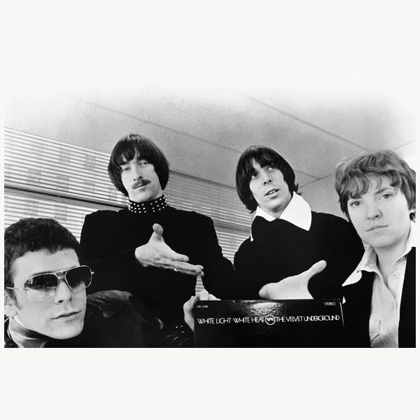
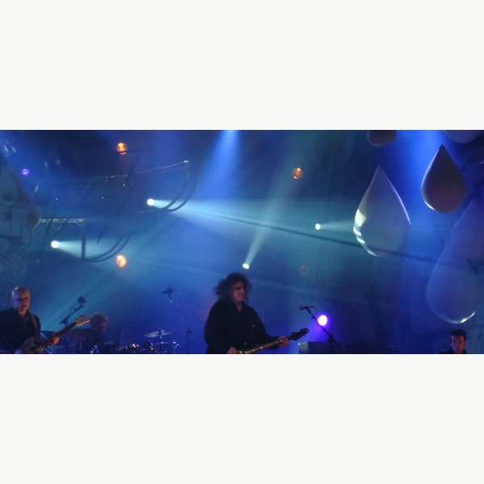
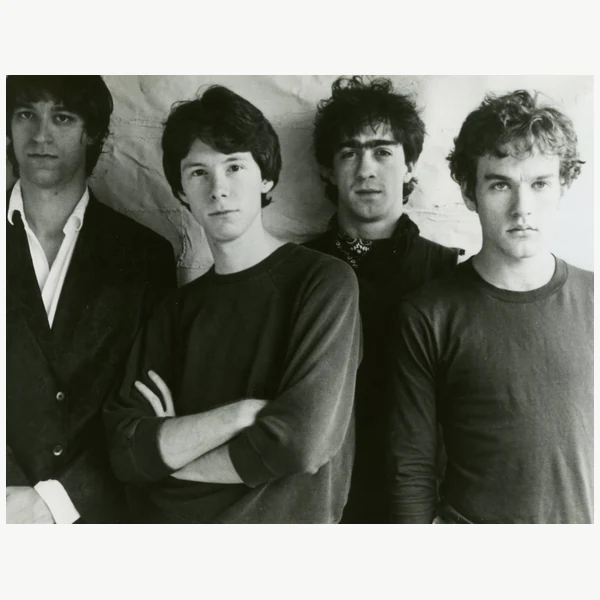
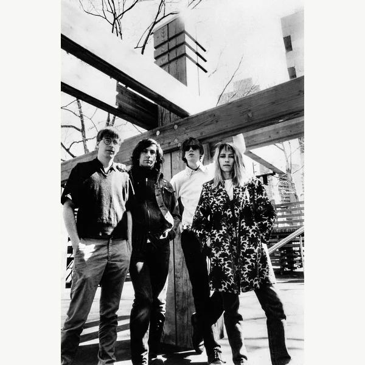
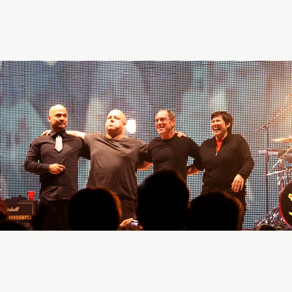
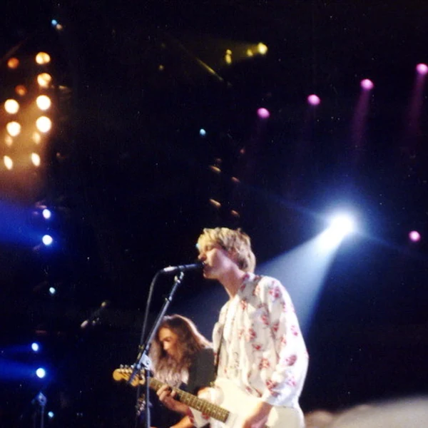
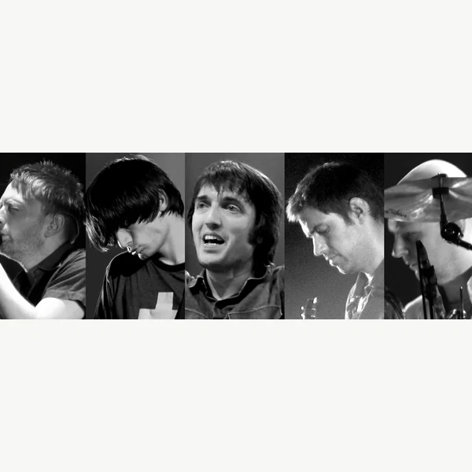

Alternative Rock is a broad name for Rock music that developed outside the established commercial mainstream, especially through independent scenes from the late 1970s onward. It was never one clearly defined sound. Some bands kept the familiar combination of guitars and drums but approached songwriting in unusual ways, while others experimented with noise, atmosphere or deliberately rough production. What connected much of the early music was the way it reached audiences through smaller labels and venues instead of the usual industry channels. That distinction became less straightforward during the 1990s, when Alternative Rock turned into one of the most successful categories in popular music. The term now covers a wide range of styles, from abrasive guitar music to relatively accessible songs. It makes more sense as a shared history of musical independence and experimentation than as a precise description of what any particular group sounds like. Inevitably, the industry eventually found a way to package that independence for sale.
Alternative Rock was originally alternative in a fairly practical sense. It described music that listeners could find outside the established Rock charts and major radio formats. During the 1980s, terms such as College Rock and Indie Rock were also used for parts of this world, although their meanings were not identical. College radio, independent labels and local music press helped these scenes reach people who wanted something different from mainstream Rock. The word Alternative gradually became a convenient umbrella for musicians who did not necessarily share a sound. When the music broke through commercially in the early 1990s, record companies and broadcasters kept the label. It was useful for marketing, even though music selling in enormous numbers was no longer much of an alternative to anything. The name survived that contradiction and has since become broad enough to cover styles that the original independent audiences might never have considered part of the same movement.
Alternative Rock grew out of the independent music networks that followed Punk and Post-Punk in the late 1970s. Through the 1980s, bands in Britain and North America developed audiences through small clubs and specialist radio, often with little interest from major record companies. Their music could be melodic and restrained or confrontational and noisy, depending on the scene. Independent labels gave them room to try approaches that mainstream Rock had little reason to encourage. By the end of the decade, several of these communities were becoming influential beyond their original audiences. The commercial breakthrough of Grunge in the early 1990s changed the situation almost overnight. Suddenly, the sound and presentation of independent Rock had become something the larger industry wanted to reproduce. Other styles continued developing alongside that success, including Shoegaze and various branches of Indie Rock. Alternative Rock never returned to being a single underground movement, but its independent traditions did not disappear simply because the mainstream had discovered them.
Alternative Rock usually starts with the instruments associated with Rock, but there is no standard arrangement that defines the genre. A guitar might carry a clear melody in one style and create a dense wash of sound in another. Some bands favour sharp contrasts between quiet verses and loud choruses, while others rely on repetition or leave the edges of a recording deliberately rough. Vocals can sound conversational rather than theatrical, although that is a tendency rather than a rule. Songwriting may follow familiar patterns or avoid them altogether. Much of this variety reflects the fact that Alternative Rock brought several independent scenes under one name. The music often borrowed ideas from Punk and Post-Punk, but it was never restricted to copying either. Its distinguishing feature was less a particular rhythm or guitar tone than a willingness to reconsider how a Rock group should sound. That can be difficult to explain neatly, which may be why the term has always worked better on a record shop shelf than in a strict musical definition.







Alternative Rock showed that independent labels and local music communities could shape popular culture without waiting for approval from the major industry. Small venues and college radio gave musicians a way to reach audiences on their own terms, although the money and opportunities were rarely distributed evenly. Some related scenes challenged sexism and created more space for women and queer musicians. Feminist movements such as Riot Grrrl also questioned the assumption that independent music was automatically inclusive simply because it rejected mainstream values. The breakthrough of Alternative Rock in the 1990s exposed another contradiction. Large record companies were suddenly promoting the same outsider identity that had helped the music grow beyond their control. Commercial attention gave some musicians a much wider audience, but it also encouraged the industry to turn local styles into recognisable products. The result was neither a complete victory nor the death of independent Rock. It showed that cultural independence is something communities have to keep working at, not a permanent quality that comes with the right clothes or guitar sound.